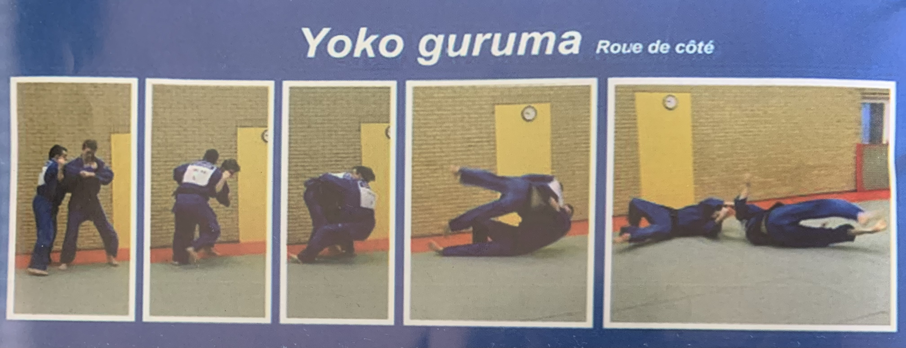

Table of contents
Judo
Judo is a modern Japanese martial art and combat sport, that originated in Japan in the late nineteenth century. Olympic sport (since 1964), and the most prominent form of jacket wrestling competed internationally.
Its most prominent feature is its competitive element, where the objective is to either throw one’s opponent to the ground on his back, immobilize the opponent on the ground or otherwise subdue one’s opponent with a hold down, joint lock or a choke/strangulation. A hold down may lead to a submission if the opponent cannot endure the associated pressure. Submission is done by tapping ground or opponent twice.
Strikes and thrusts, by hands and feet, as well as weapon defences, are a part of judo, but only in pre-arranged forms (kata) and are not allowed in judo competition or free practice (randori).
Judo means ‘supple way’ in Japanese and is characterized by the indirect application of force to defeat an opponent. It tries to redirect the opponent’s force, use momentum, off-balance the opponent, or make use of superior leverage. Thus judo focuses on movements that enable a physically weaker individual to beat someone physically stronger.
General vocabulary
Etiquette
Rei - Bow. (verb)
Zarei - Kneeling bow.
Dozo - Please.
Arigatou Gozaimasu - Thank you very much.
Sensei - Teacher.
Judoka - Judo practitioner.
Combat and practice
Tori - The person performing a technique.
Uke - The person on the receiving end of a technique.
Keiotsuke - Attention.
Hajime - Begin.
Matte - Stop.
Keikoku - Warning.
Sonomama - Do not move. (when referees and judges need to discuss something)
Yoshi - Carry on. (continue the contest)
Maitta - Give up.
Sukasu - Evasion.
Ukemi - Break your fall. (Falling practice)
Shinpan - Referee.
Shiai - Competition/Tournament.
Dashi - Stance. (Describes primarily the position of the feet)
Kuzushi - The act of breaking an opponent’s balance and destabilizing their posture to create an opening for a technique.
Tsukuri - Body positioning.
Kake - Execution.
Kime - The finish or ‘coup de grâce’.
Uchi Komi - Repetition practice without throwing.
Kata - Form or pattern. (is practiced following a formal system of prearranged exercises and needs to be known for obtaining the black belt)
Randori - Free-style practice. (sparring)
Ju Renshu - Both judoka attack in a very gentle way where no resistance is applied.
Kakari Geiko - One judoka attacks and the other only relies on defensive and evasive techniques.
Techniques
- Nage Waza - Throwing techniques. (involves unbalancing an opponent’s posture and throw the opponent to the floor)
- Tachi waza - Standing techniques.
- Te Waza - Hand techniques. (consists of effectively using the hands/arms to throw the opponent)
- Koshi Waza - Hip techniques. (consists of throwing an opponent in a sudden motion, using one’s hip as the fulcrum)
- Ashi Waza - Foot and leg techniques. (consists of using one’s foot/leg for reaping, tripping, sweeping, supporting, entangling, etc.)
- Sutemi Waza - Sacrifice techniques. (consists of wrapping opponent’s body around his own and falling together with him)
- Ma Sutemi Waza - Sacrifice technique whereby the thrower falls directly backwards.
- Yoko Sutemi Waza - Sacrifice technique whereby the thrower falls onto his side.
- Tachi waza - Standing techniques.
- Ne Waza - Ground techniques. / Katame Waza - Grappling techniques. (‘lutter avec’ in french, refers to ground techniques)
- Kansetsu Waza - Joint locks. (‘clé de bras’ in french)
- (Sh/J)ime Waza - Chokeholds (blocks airway from front of neck) or strangulation (blocks blood supply via compression of neck sides).
- Osaekomi Waza - Holding techniques. (consists of holding one on his back)
- Atemi Waza - Striking techniques.
- (K/G)eri - Kick.
- (Ts/Z)uki - Punch.
Waza - Technique.
Kaeshi Waza - Counter techniques. (are used to counter an opponent’s technique, whereby he is thrown instead of you)
Renraku Waza - Combination technique.
Tokui Waza - Favorite technique.
Gaeshi - Reverse, return. (‘retournement/renversement’ in french) (someone flat on belly or on all fours needs to be treated with a ‘retournement’)
Equipment
Dojo - Martial arts school.
(Judo)gi - Uniform.
Eri - Collar of uniform.
Obi - Belt.
Tatami - Training mat.
Belts
Yellow belt
Vocabulary
O - Major.
(G/K)oshi - Hip.
Guruma - Wheeling. (as in a car)
Tai - Body.
Otoshi - Drop.
De - at/in/on.
Ashi - Foot/leg.
(B/H)arai - Sweep. (‘balayage’ in french)
Soto - Outside.
Gari - Reaping. (‘faucher’ in french)
Hon - Basic.
Kesa - Scarf. (‘écharpe’ in french)
Gatame - Hold.
Kuzure - Falling apart. (when Hon Kesa Gatame is falling apart we can readjust and use Kuzure Kesa Gatame)
Yoko - Side.
Shiho - Four corner. (means crossroards, a place where roads cross at right angles)
Kami - Top.
Tate - Straight.
Nage Waza
O Goshi

Place your right foot inside opponent’s feet, right next to his left foot, with some frontal distance. This position, after turning around, allows to place your hip backwards and to the left. Usually, Tori’s legs are slightly bent to place Tori’s hip below Uke’s center of gravity. However, this depends on the height difference between Uke and Tori. Finally, place Uke on your back and make him fall from left side of your back. Use your right arm to pull him into the fall.
video
The need for destabilization before initiating the movement is applicable to all throws.
In video the used destabilization consists of pulling Uke towards Tori and down before performing the technique. As in this type of movement we pull over ourselves, Uke coming to us can be used as momentum, not only when we pull Uke to us but also when Uke voluntarily moves forward during combat.
However, the destabilization I learned that accounts for all throwing movements consists of pulling Uke towards you while lifting left arm up and turning as if wanting to look at watch. The lifting up is useful to lift Uke on your back before throwing him down on the ground. This arm lifting is also used to destabilize opponent more on his toes, and to place yourself under his arm.
Destabilization is best performed after placing first foot forward giving you leverage to pull.
Initially you can learn to do such movements step by step but eventually you want to be able perform all the steps simultaneously for speed.
Koshi Guruma

I guess this movement may be more appropriate if Uke is smaller than Tori.
video
Tai Otoshi

When blocking Uke’s leg, block low, with your lower tibia against Uke’s lower tibia. Blocking higher at knee can be dangerous.
A variation exists where you drop on one knee to exert more force called drop Tai Otoshi.
With drop Tai Otoshi your usually standing leg will not be standing anymore but on knee. Thus your tackling leg will be way lower and your body weight will be used to drag opponent down. Drop Tai Otoshi is best used when opponent has feet horizontally closer together because then Eri Seoi Nage where you need to come between legs is not possible, and because it makes drop Tai Otoshi easier on tackling leg needing less distance.
Before performing the movement you can push opponent backwards to create a reaction where his momentum comes forward. Also you can destabilize him during the movement by pulling him towards you while turning which should destabilize him on the one leg we will tackle. You should have the usual grip, twist your body, and go with one leg on your knee against his leg which will destabilize that leg of him, lastly extend your other leg against his other leg for the tackle. In the meanwhile you should be falling forward, as if you would fall on your belly, this will pull the opponent into the tackle.
video
If the opponent’s left foot is forward while you want to tackle the right foot, then you can move this left foot backward by attacking it with left O Soto Gari or O Uchi Gari. Alternatively, you can bump into this left foot with your leg who ends on knee, while turning to perform the movement.
video
In the following video, Tai Otoshi is performed without holding opponent with two hands. Instead, only the hand that should hold the Eri, grabs the opponent’s arm while turning to push him into the tackle. The opponent was already vulnerable in a forward momentum which allows this lighter grip. This can be useful as the opportunity for Tai Otoshi sometimes arises without holding Uke with two arms yet. Later, he performs Tai Otoshi with two arms holding the opponent’s arm to push and pull him into the tackle.
video | video
When dropping on your knee you end in a vulnerable position. If the opponent dodged the attack he may be able to just push you on your back easily. In such a scenario, you could quickly turn on your belly to avoid him pushing you on your back. Else, the advice is to only perform the movement at the right time when opponent is in a forward momentum.
However, this movement can be dangerous for Tori. If Uke doesn’t fall into the tackle but falls into the knee joint, he can break that knee joint. Thus, you want to make sure your lower tibia is used as the fulcrum and not your knee. Also, the lower you tackle, the least likely this occurs.
Because of the risk with drop Tai Otoshi, another Tai Otoshi variant was proposed to me. With this variant, Tori slides his left foot to the left side, then places his right foot to the side of Uke as if doing a side Tai Otoshi. Then you can pull and push Uke to the side without necessarily using your right leg as a fulcrum.
I don’t think this movement is effective with my low body weight, I cannot put a lot of force into a horizontal pull and push where I stay with my body straight. Thus, I will keep doing drop Tai Otoshi but only when it feels easy and safe. Otherwise, I think left Uki Waza to be very effective in replacing drop Tai Otoshi. Drop Tai Otoshi may only be superior to Uki Waza when in proximity of the opponent.
De Ashi Barai

Also called De Ashi Harai. With hands do circular motion like when using the wheel of a car to turn. In general you should sweep the opponent’s leg while he raises it to walk forward or attack you. However, the movement can also be done even if his leg is on the ground and works best when his feet are close together horizontally.
video
O Soto Otoshi
![o soto otoshi]()
First, place left feet next to his. Pull him to the left to destabilize him on leg that we will reap. The back of your right knee should go against his. Then take one step forward with left leg while having your shoulder against his, throwing him to the ground.
O Soto Gari
![O Soto Gari Solo Drill - 510 Judo]()
When reaping, leg contact should be between back of knees. While reaping don’t forget to pull leg backwards while pushing upper body forward. Also, don’t forget to destabilize opponent by moving him on leg that will be reaped. Also, don’t forget to place yourself next to the opponent and not in front of him with a distance.
video
O Soto Guruma
![O-soto-guruma - 🥋 Judo.how » All about Judo «]()
This movement was not necessary to know for passing the yellow belt in my Dojo, but is interesting still.
When reaping, Tori’s knee pit needs to be in contact with Uke’s knee pit of leg at opposing side. This will reap both legs. The upper-body of Tori should be bended side-ways as in the picture while reaping to wheel him over. Destabilize Uke like this by pulling with arms to the side during the movement.
video
This technique can be useful when Uke is sideways to you trying to perform O Soto Gari unsuccessfully, because then his leg at opposing side will be the only one standing.
I guess this technique works best for individuals with longer legs and/or more strength, and is best used when Uke has legs horizontally close together. I think it is more efficacious than simple O Soto Gari to throw heavy individuals when able to output force.
Ne Waza
Hon Kesa Gatame
![JUDO - Hon_gesa_gatame]()
Don’t forget to put head down where hand lies. Head down will avoid opponent grabbing back of your Eri to anchor his leg and use up and down momentum to move up.
If Uke moves you should move along to keep a perpendicular position. Else, he could grab your legs with his or use an escape motion more easily. If he grabs your legs the hold down does not count.
Kuzure Kesa Gatame
![崩袈裟固 / Kuzure-kesa-gatame - YouTube]()
Don’t forget to put head down where hand lies.
video
Yoko Shiho Gatame
![Yoko shiho gatame - EcuRed]()
Your chest should be on his chest, which is not well illustrated on picture. Also I think left hand can grab higher up in eri. Right hand should ideally grab obi, however if not possible, judogi can be grabbed instead. Usually you should be on your knees spread open. However, if opponent tries to turn outward, you can put extra pressure for him to stay in by straightening legs and even raising them from the ground. If still not sufficient, you can use one hand to push the ground.
Being high up on opponent is important, else he can push you away and catch your neck with his femur. You can also tuck your chin to prevent a choke.
If your grip between his legs falls apart, you can change grip where that hand grabs the other hand palms together under his shoulder while keeping your chest on top of him.
Kami Shiho Gatame
![File:Kami shiho gatame.svg - Wikimedia Commons]()
Your chest should be against opponent’s chest. Your arms should go under his, be squeezed towards each other, and grab his belt.
Tate Shiho Gatame
![Tate Shiho Gatame - club Judo Judo Club Villeneuvois - Clubeo]()
Chest should go against chest. Arms should go underneath his arms. Elbows can be raised to block Uke’s arms upwards. Hands should grab each other palms together under Uke’s neck. Head should go to the ground next to his. Legs should be positioned so that knees are outside Uke’s legs but feet go inside to grab them.
In the video this technique is done slightly differently as one of Uke’s arms gets crushed and Tori’s feet don’t go inside Uke’s legs but instead against them to squeeze them.
video
Orange belt
Vocabulary
Uki - Floating.
Goshi - Hip.
Ippon - One thing. (in combat technique context it means ‘one arm’, thus ‘Ippon Seoi Nage’ means ‘one arm over the back throw’)
Seoi - Over the back/shoulder.
Nage - Throw.
Morote - Two hands.
Eri - Collar of uniform.
O - Major.
Ushi - Inside.
Gari - Reaping. (‘faucher’ in french)
Ko - Minor.
Hiza - Knee.
Guruma - Wheeling. (as in a car)
Sasae - Support.
Tsuri - Fishing. (simultaneous lifting and pulling back)
Komi - Into something. (Tsuri Komi means to pull-lift something into)
Ashi - Foot/leg. (Sasae Tsuri Komi Ashi means supporting foot lift-pull throw)
Kata - Form.
Gatame - Hold.
Kuzure - Falling apart. (when Kami Shiho Gatame is falling apart we can readjust and use Kuzure Kami Shiho Gatame)
Kami - Top.
Shiho - Four corner. (means crossroards, a place where roads cross at right angles)
Nage Waza
Uki Goshi

Mainly hip, instead of mainly back as in O Goshi, is used as the fulcrum. Thus, Tori is slightly side-ways to Uke, instead of completely backwards. Right leg does not need some frontal distance as with O Goshi, instead it can directly be placed in between Uke’s legs to allow the hip to push into Uke.
Uki Goshi can be used more easily against heavier people than O Goshi.
video
Ippon Seoi Nage

The following advice is applicable to all shoulder/back throws.
Initially, after turning around and while bringing Uke on your back, use your arm to raise his arm up as if moving the opponent up on your back. Once on your back you can of course pull this arm down to make the throw to the ground.
Bend knees before a shoulder throw, being lower creates a better leverage.
The hips should be positioned outwards/sideways and be in front of Uke for him not to escape.
For the throw in the end, The upper body should not just go down but also to the side, like right/left shoulder will go to left/right knee.
video
While training Seoi Nage during Uchi Komi be more explosive. Do the movement very fast, all steps simultaneously in one time, where you turn, destabilize (as explained in O Goshi), and bend knees all at once.
I enjoy using Ippon Seoi Nage when using the left grip.
Morote Seoi Nage
![File:Morote-seoi-nage.jpg - Wikipedia]()
Keep your right hand on usual collar side but turn your forearm until your elbow ends in Uke’s other side’s armpit.
video
This is my favorite Seoi Nage movement when using the regular right grip.
Eri Seoi Nage

Take with right hand opposite collar side, we call this the cross-grip. The cross-grip cannot be held for too long else penalties can be given thus attack needs to be quickly followed.
As shown in video you can even go down on knees to make sure you are low enough for throwing above your right shoulder. However, usually, you would squat down and push hip out as in picture and use the hip/back as a fulcrum more than the shoulders. Alternatively, you can even only have one knee on ground. Those different leg/knee position possibilities are applicable to all Seoi Nage movements.
video
One advantage of Eri Seoi Nage may be that it is easier to perform on left side. When performing on Uke’s left side, your right hand will already hold Uke’s left collar and thus you only need to join your left hand to grab Uke’s collar above your right hand.
Let’s look at knee drop Seoi Nage more in detail.
Certain Seoi Nage movements can be easier on arm positioning when Tori’s body is positioned lower, thus sometimes Seoi Nage on knees may simply be easier in terms of performing the movement. This depends on individual morphology and should be tested.
Knee drop Seoi Nage works better against opponents who are much taller and heavier than you because instead of pulling them forward, you are using your body weight to drag them down so they flip over your shoulder which is positioned low under their higher center of gravity. Basically, it enables more force by using own body weight and better leverage by being positioned low, which should help against heavier and taller individuals.
Once you are on your knees however, you are in a vulnerable position if your attack fails, and thus you should stand straight as fast as possible again or continue combat on ground. In worse case scenario you can hide on all fours.
To perform knee drop Seoi Nage effectively you can destabilize, by dragging down, the opponent, all the while spiraling and falling on knees with anchored feet. In the end you should be in between Uke’s legs, with your back against Uke. Pull him up and against your back, to then pull him down and flip him over your right shoulder. When he is against your back you can perhaps bend over to help with the flip over your shoulder. Because you need to end between Uke’s legs, make sure his legs are opened before performing the movement. To open his legs you can move him to the side beforehand.
As you need to pull the opponent down, Ippon variant does not seem a good idea. Eri variant seems easiest if needing to grip higher up. However, if dragging opponent down while spiraling, Morote variant can be used to drag him down by keeping him closer.
video
O Uchi Gari
![O uchi gari]()
Here, opponent’s left leg will be reaped and thus this movement is usually performed when opponent’s left leg is forward.
Place your right leg between his legs. Bring left leg right behind other leg. Bend knees and destabilize opponent by pulling him down and pushing with forward-bended body weight against him. Pulling him down will avoid him escaping by lifting his leg. Use right leg to reap his left leg, touching his outside ankle and making a circular motion. While reaping, push with own body against his for him to fall and you maybe with him. By pushing and falling with him you will put more pressure on his fall. You should also destabilize him with arms to the side of the reaped leg.
As shown in video, you can also perform this technique on someone walking towards you when the leg you will reap takes a step forward. However, then, opponent is not in ideal backwards momentum, besides if you pull him beforehand and he resists by leaning backwards.
video
A variation exists, where you start by holding both sleeves of opponent. The sleeve to your left, you can lift up to allow your neck to go under his armpit. The sleeve to your right, you can squeeze against his body. Similarly, the left sleeve around your neck you can squeeze against your neck. Now that you hold the opponent tight, you can perform O Uchi Gari. If O Uchi Gari is not possible due to opponent taking a left step backwards as defense, you can attack the other leg with Ko Uchi Gari.
When performing reaping movements, don’t forget to bring the non-reaping leg close to the reaping leg before reaping, or else you will be unstable.
Ko Uchi Gari
![Kouchi Gari | CMAC-JUDO.com]()
Here opponent’s right leg will be reaped and thus this movement is usually performed when opponent’s right leg is forward.
Place your right foot between his legs. By placing right foot further away from opponent’s foot that will be reaped you can use that distance as momentum for the sweep. Bring left leg right behind other leg while opening body towards the leg that will be reaped. Bend knees and destabilize opponent by pulling him down and pushing with your forward-bended body weight against him via your elbow against his sternum all the while pulling him in towards you. Use your right leg to reap his right leg at the back of his heel. Push with your right hand to down him and eventually also push with own body weight against him and fall with him.
video
A variation exists with a different grip allowing more weight output on the reaped leg to increase the chance of opponent falling but also of you falling which makes it a sacrifice technique.
As usual, Tori’s left hand needs to grip Uke’s right sleeve and Tori needs to open his body to the left. Differently, Tori’s right hand needs to grab under Uke’s left shoulder. This grip will put weight on Uke’s left leg that Tori will reap. The reaping can also be done differently, where Tori’s knee pit can be in contact with Uke’s lower leg as the tackle should be low. This means engulfment of Uke’s leg to avoid an escape by moving his leg to the side. While reaping, Tori can fall on/with Uke to use all his body weight and direct a fall backwards and leftwards.
Before initiating this variation movement, it can be advantageous to pull Uke forward which could place him in a backward momentum while letting him advance the leg we want to reap.
If the opponent holds your two sleeves, you can hold his sleeves too and subsequently push his arms against his body while placing your neck under his armpit. Now you can perform Ko Uchi Gari or O Uchi Gari.
Hiza Guruma

In the regular version you first need to move closer and to one of Uke’s sides but not too close either, to then destabilize Uke by turning and pulling while performing the tackle on the leg at opposing side with the inside of your feet right under his front knee. Avoid placing it too low, else, opponent can escape simply by lifting his leg.
In the end, don’t forget to move hands like a turning wheel once Uke is destabilized against your fulcrum and push your fulcrum into him.
Instead of moving to the side before using the front of Uke’s knee as fulcrum, another version is to stay in front of opponent and place your feet under the side of his knee and tackle him like that laterally.
video
This technique works quite well for me during combats for some reason. However, during combats, the first part where you move to one of his sides is often skipped and tackle is performed directly. Also, during combat I often used my tibia as fulcrum instead of feet. This allows for better grip and force output, however, it increases injury risk at that site if the movement is used repeatedly. After trying to use inside of feet as fulcrum instead I was pleasantly surprised as it also worked very well and maybe even better by providing longer range. I still ended with some pain at inside of feet instead of tibia. Thus I should try to avoid hitting while performing this movement. Indeed then I can perform the movement without pain.
Sasae Tsuri Komi Ashi

Here the front ankle will be used as tripping point, instead of the knee as in Hiza Guruma. Tori needs to pull Uke towards himself and up while twisting. Also, don’t forget to not only block Uke’s ankle but push into it.
This movement is often used when the opponent tries to close the distance by pulling you into him.
video
Ne Waza
Kata Gatame
![Kata gatame]()
Your right leg should be on knee against his Obi to block his body from turning inwards. It is not shown in video but I think you should also turn that right leg so that it is perpendicular to Uke, this will avoid opponent from grabbing that leg with his own legs.
Your arms should be palms together under Uke’s neck.
video
Anchor the foot of leg who lies on knee. Foot anchoring should be used in general when possible/applicable and consists of having toes standing on the ground instead of just having back of feet loosely lying on the ground.
This technique can be used when Hon Kesa Gatame fails due to inability to grab Uke’s arm. Then you can place his arm above his head instead and crush it with your shoulder while lowering your head to the ground.
Kuzure Kami Shiho Gatame
![Kuzure kami shiho gatame]()
A variation of Kami Shiho Gatame where you position one of your arms over your opponent’s arm instead of beneath it. With that arm you grip the back of his collar. Finally, turn with your body slightly to the side of that arm.
video
This technique can be used when the regular Kami Shiho Gatame fails as Uke escapes one arm.
Green belt
Vocabulary
Nage Waza
Uchi Mata
![Uchi Mata | CMAC-JUDO.com]()
Make sure Uke’s feet are opened. Unbalance him forward and/or on the leg that will be swept. Place your feet close together in front of him and turn around. If you wish, move your arm that grabs Uke’s Eri around his shoulders. Sweep Uke’s inner thigh and throw him over your hip.
video
This can be an efficacious movement against opponents’ of same height and weight, but I believe it is not effective against taller or heavier opponents.
Tomoe Nage
![Tomoe Nage | CMAC-JUDO.com]()
Tomoe Nage is a sacrifice technique. If opponent is bent forward and/or in a forward momentum, Tomoe Nage seems ideal. It consists of unbalancing Uke forward and down by dropping your back to the ground with your pelvis close to under his. Simultaneously, lift your right foot to place it under Uke’s lower abdomen. Finally, push him up with that leg and throw him forward over your head.
Sometimes you can use the tibia of your left leg to help lift and stabilize the opponent when performing the movement is difficult.
video
Sacrifice Hiza Guruma is a new technique that looks similar to Tomoe Nage. Instead of placing right/left foot on Uke’s lower abdomen, place it right above knee to reap Uke’s right/left leg. Then use arms to turn him on his back to the side of reaped leg instead of throwing him above shoulders. Reaping left leg may be easier when conventionally gripping opponent because your right hand will be able to push his body to the side. Left hand would maybe ideally grip side of shoulder instead of sleeve to aid with turning opponent on his back. Also, I think, from personal experience, the leg you don’t use to reap, could be used to help lift and turn the opponent by letting him fall on your raised tibia.
video
Both techniques are useful when opponent has forward momentum. But I guess sacrifice Hiza Guruma is especially useful when opponent is turned, showing one leg and hiding the other, as the shown leg could be reaped and his body already being side-ways will be easier to turn.
However, even if I like this technique very much, sacrifice Hiza Guruma has been forbidden in my judo club because it can be dangerous for Uke. Also, it puts Tori in a vulnerable position. Instead, I can tackle Uke’s right side with Uki Waza, laterally with Yoko Otoshi, and Uke’s left side with drop Tai Otoshi.
I used to think Tomoe Nage to not be possible if Tori’s legs are shorter than Uke’s legs, but this may be wrong. Instead of placing your leg against Uke’s abdomen when on the ground, you can place your leg while falling, this will pull the opponent forward and down onto your leg. Thus, instead of letting your foot come to the opponent’s abdomen, you let the opponent’s abdomen fall onto your leg or with your leg.
Thus, in the end, Tomoe Nage may be a useful technique when opponent has forward momentum.
I think Tomoe Nage is difficult to succeed because the opponent needs a lot of forward momentum as you only pull him down while with Uki Waza or drop Tai Otoshi you pull him down but you also tackle his leg.
Ne Waza
Blue belt
Vocabulary
Nage Waza
Tani Otoshi
Put own leg behind Uke’s legs and move Uke backward for own leg to tackle him. The tackling leg should be low.
Tani Otoshi is a sacrifice technique, meaning Tori falls with Uke to put more weight into the fall. This is done by Tori stretching his tackling leg, sliding it over the ground until Tori’s butt falls on the ground. Sacrifice techniques allow more weight and thus force in a movement for a lighter individual to down a heavier one.
Uke is generally held at Eri and back of shoulder. However, you can hold what feels easiest.
video
Instead of falling vertically with butt on ground, you can fall backwards with Uke while holding him around the chest area to exert even more force. Use your arms to turn Uke into your tackling leg.
However, by mistake, you could fall on your back while opponent on his side. Thus, while falling, you need to turn for you to end on your side and opponent on his back.
This technique doesn’t work often in my experience. But if you are placed to the side of Uke and Uke has a backward momentum it can for sure work.
Kata Guruma
The regular version of Kata Guruma grabs Uke’s legs to place him on Tori’s shoulders while standing straight. Thus it is an illegal technique in competition.
Below I will describe a legal variant where no legs are grabbed. We may call this variation side Kata Guruma.


Grab under Uke’s shoulder with one hand. Then go with head underneath that shoulder while bending Uke down if he is not already bent. Be on knee with one leg and on feet with the other. Use your other hand to grab under initial hand grab. Move your feet from the ground to the side, to initiate a fall, and let Uke fall over you. Maybe, as a personal idea, the feet we move could push against Uke’s leg.
video
This movement is useful when the opponent is bent forward defensively. Before initiating the movement, you could pull him up for him to react with a downward momentum.
This movement does not work often in my experience during combat. As Tori has legs on ground, the weight/force output is probably smaller. Also, if Tori already is in a bent over position, there may be less momentum to pull him into.
Soto Makkikomi
![Soto-makikomi – 外巻込 | Judô: Modo de usar]()
Use Uke’s weight to entrain him into the fall by grabbing with one hand his sleeve, turning body while raising other arm out to roll it on the ground during fall for Uke to end on his back and Tori on top.
video
I guess this technique is useful in close combat when Uke is in a forward momentum.
Yoko Guruma

This movement starts with Tori in the back of or next to Uke. Tori should then move to the lateral front of Uke, use this movement as momentum, and fall backwards. Tori should grip the back of Uke’s waist at opposing side with one hand to allow lateral pull and Uke’s Eri with the other to allow forward push. The leg of Uke should be between Tori’s legs. When falling, Tori should pull Uke into that fall and use Tori’s arms to roll Uke over Tori’s leg at the external side. This should roll Uke over Tori for Uke to end on his back against the ground.
video
I think this technique can be great to follow-up on a failed Ura Nage. But don’t forget to have one hand on Eri to push and turn him, else he can just fall on you. If he falls on you, be ready to lift and turn him with that one arm.
Yoko Otoshi

Is useful when Uke has lateral momentum.
Don’t forget to use arms to turn Uke on his back.
video
This technique works well for me during combat when Uke has lateral momentum.
Uki Waza and Yoko Otoshi work better when your left hand grips the opponent’s upper shoulder instead of lower sleeve. That is because you will need to turn the opponent during his fall.
Uki Waza

Destabilize the opponent by pulling him towards you and into your fall. During your fall, slide your leg in front of Uke’s lower tibia to tackle him. Simultaneously, use your arms to turn him on his back.
video
This technique often works well for me. I maybe do it a little differently compared to in the picture. I tackle not with my knee but with my inner foot, as if performing Hiza Guruma with a fall and lower tackle. I don’t just lay my leg on the ground, I place my inner foot where the opponent’s tibia lies, even if it is raised, and I push against it. I think this provides better control over and force into the tackle.
I usually do this technique to my right, but I am also able to perform it successfully on my left. You need to feel where the opponent’s momentum lies. If the momentum is forward and into one of those sides, you can perform Uki Waza on the right side.
Uki Waza and Yoko Otoshi work better when your left hand grips the opponent’s upper shoulder instead of lower sleeve. That is because you will need to turn the opponent during his fall.
When I perform a movement who lies between my Uki Waza or Yoko Otoshi, I like to destabilize the opponent by turning him from a distance. This turning makes the opponent oblivious towards my incoming attack compared to a regular destabilization where you pull him forward and close to you. To turn him like that, I move to one side while using my straight arms to move him to the other side. Also, I bend backward to use my weight to pull him forward and prepare for the fall. Once he is destabilized into that lateral and forward momentum, you can perform a movement that lies between my Uki Waza or Yoko Otoshi.
Ushiro Goshi
This lift is performed from the back, often as a counter to a back throw. First, you can bend down to resist the attack and help with subsequent lifting. Simultaneously, grab with both arms around Uke, or use one hand at his Eri. Grabbing the Eri with one hand improves control when moving Uke but reduces lifting strength. Subsequently, lift Uke on your forward pelvic, use momentum to turn him in the air. Finally, let him fall on his back.
video
Uke could counter by engulfing the back of your leg to tackle you, to avoid this from being fatal have some vertical distance between legs. In general, if this is blocking your lift, don’t force it and change your attack.
As a competition rule, you cannot grab opponent under the butt.
Utsuri Goshi
![Utsuri Goshi | CMAC-JUDO.com]()
This movement is useful when after lifting Uke from the ground we need to turn him but don’t have the ability to turn him in the air as in Ushiro Goshi. This often happens when lifting from the front. With Utsuri Goshi we use our hip to perform a movement similar to O Goshi that will turn the opponent for him to fall on his back. It is here preferred to grip Uke with one hand at his Eri instead of both hands around his waist to move Uke over Tori’s hip.
video
To help lift Uke up, Tori can raise one of his knees against Uke’s body.
Ura Nage
Ura Nage is a sacrifice lift that is usually performed from the side. As it is a sacrifice technique, Tori falls with Uke. Performing it from the front is usually too difficult as Uke needs a larger turn to end on his back. Performing it from the back is possible but can be more difficult as Tori needs to turn without Uke turning simultaneously.
Ideally, during positioning, one of Uke’s legs should be between Tori’s legs. This means Tori is to Uke’s side. Before lifting, knees should be bent. Then, Tori can lift Uke on his pelvis. Use the lifting momentum to turn your body while falling backwards. Tori’s head can be against Uke’s shoulder which will help with turning Uke on his back. If Uke’s back is to Tori’s left, then Tori should lift his left leg to help him turn into that left. Alternatively, after the lift, as in the picture, Tori can throw Uke over Tori’s shoulder by Tori bending his knees and body back. However, this is way more difficult and makes Tori end on his back too. Usually, a combination of both turning and throwing is used, where Tori tries to throw above his shoulder but still ends up turning at some point.
video
When wanting to come close for the movement, you can grab Uke’s right sleeve with your right hand, push it down and across his body while you go to his side. Subsequently, grab around his wait palms together.
If the opponent entangles the back of your foot during your lift as a tackle, prevent your fall if necessary by placing Uke back on the ground and performing Tani Otoshi instead.
A lift performed from the back can be countered by an Uchi Mata. To prevent this, bend knees before lifting.
While performing Ura Nage you can potentially use your leg to lift and even turn Uke as in this or this clip.
Ne Waza
Brown belt
Vocabulary
…
Nage Waza
…
Ne Waza
…
Black belt
Vocabulary
…
Nage Waza
…
Ne Waza
…
Other movements and combinations
Sometimes we learn random movements that are not part of the belt movements. Those, usually, have no name. They don’t have a name because they were not part of the listed movements when judo was initially created. Knowing this list never gets updated.
Most of those movements when on the ground, can be categorized/named as entries (Entrées in French), and if the ground movement starts with opponent on all fours or on belly, then we can more specifically call those a reversement (Retournement in French). Those movements with no name start in a certain position to move the opponent into a named Osaekomi.
When passing a belt we sometimes need to demonstrate such an entry movement that ends in a specific ground technique associated with the belt. The entry movement you can choose yourself based on your affinities.
When standing, most of those movements are counter techniques (Kaeshi in Japanese), or combination techniques (Renraku in Japanese).
Counter techniques are used to counter an opponent’s attack by evading his technique and moving into a position to perform a named technique.
A combination technique combines multiple named techniques together. Whereby the first one is used to destabilize Uke into a position where momentum allows the second one to succeed.
Nage Waza
Before starting to practice judo it is important to learn to fall properly to prevent injuries. We call this breaking your fall (Ukemi in Japanese). Here is a good Ukemi guide.
Kaeshi
If someone turns his back on you to try a throw, you may be able to resist it by bending your knees. Then you can perform Ushiro Goshi or Ura Nage from the back.
If someone turns his back on you to try a throw, you may be able to resist it by moving to the side. Then you can perform Ura Nage from the side.
If someone turns his back on you to try a throw, you can turn simultaneously to bang your hip against his hip and block his turn. After blocking him like that, you can follow with a counter such as Ura Nage from the side again.
When your foot is not on the ground and someone tries to perform De Ashi Barai, you can curl your leg to dodge his attacking leg, then you can straighten your leg again to counter with De Ashi Barai on that attacking leg.
If someone attacks you with a reaping movement, they will be in a forward momentum that you can use to perform Uki Waza (or even Yoko Otoshi if the opponent positions himself side-ways) after dodging the reap by moving backwards. Similarly, after moving backwards, you could perform De Ashi Barai on their raised attacking leg.
If someone attacks with a knee drop Seoi Nage, you may be able to resist it by moving to the side. Then you can come in front of the opponent and perform Tai Otoshi or a strangulation from the back.
If the opponent counters your Ura Nage with sweeps, try to dodge the sweep and attack back with De Ashi Barrai on the opponent’s raised leg.
If the opponent entangles your tibia during your front Ura Nage as a tackle, stop lifting him and perform Ko Uchi Gari like in this video. If you are not in a front Ura Nage position, you can place the opponent back on the ground and move in front of him to perform the front Ura Nage.
Renraku
Besides learning by heart different combination techniques, you can just learn what technique to perform when. Start with one technique and if Uke hasn’t fallen but is destabilized, follow-up with the right technique that uses the momentum from the destabilization, if still not on ground but destabilized, follow-up again with an appropriate technique relative to his destabilization momentum, and so forth. When following-up movements it is important to be very fast as the opponent won’t be destabilized for long.
If you turn your back to Uke for a back throw or Tai Otoshi and it fails, the person may still be behind you. Then you are well placed to reap the back of Uke’s leg from the inside while falling backwards.
If you turn your back on Uke for a back throw or Tai Otoshi variant and it fails, the person may be to your side. Then you can perform Ura Nage or O Soto Gatame/Gari.
When your knee drop Seoi Nage fails due to the opponent not falling forward over you, then you can utilise his backward momentum by jumping and falling backwards.
Maybe the same is possible after failing drop Tai Otoshi. Otherwise, drop Tai Otoshi could be followed by Ura Nage as the opponent usually ends close by and to your side after drop Tai Otoshi failed. Lastly, a failed drop Tai Otoshi could create lateral momentum to one side which may be ideal for a Yoko Otoshi follow up on the other side.
Tani Otoshi pulls Uke backward for him to end in a forward momentum if he resists. Uki Waza can be used to down Uke using this forward momentum.
If trying to perform Ura Nage and Uke bends his knees or blocks his leg behind yours to prevent you from lifting him, you should stop lifting him and perform Yoko Guruma or Tani Otoshi depending on whether his momentum is forward or backward respectively. Those movements are easy to perform from the Ura Nage grip as one hand can be kept at the lateral back waist side and thus only one hand needs to move to grip the Eri.
O Uchi Gari creates a front and left momentum in Uke if he resists. This is ideal to follow up with drop Tai Otoshi. The positioning of Tori during O Uchi Gari also facilitates the drop Tai Otoshi follow-up. The right leg of Uke coming forward during O Uchi Gari also allows the drop Tai Otoshi.
Ko Uchi Gari sets Uke in a front and right momentum which is ideal to follow-up with Uki Waza. Else, the leg opening of Uke during Ko Uchi Gari would allow for drop Seoi Nage.
O Soto Gari/Gatame forces Uke in a forward momentum; you can follow-up with the front of knee variation of Hiza Guruma to use that forward momentum.
Only moving towards and next to the opponent for O Soto Gari/Guruma can already create a forward momentum if he resists and blocks you. In that case you were unable to close the distance for Hiza Guruma. Still, you can utilize that forward momentum with Uki Waza.
If the opponent resists Sasae Tsuri Komi Ashi, he may advance his right leg and be in a back and right momentum which is ideal for O Uchi Gari.
The front of knee variation of Hiza Guruma could be followed by side Ura Nage because Uke would end close and next to Tori.
When performing the Hiza Guruma variant on the side of the knee, Uke may not fall but will be destabilized in a lateral momentum to the opposing side Hiza Guruma was performed on. Maybe you could perform Yoko Otoshi to that opposing side. However, while resisting, opponent often takes a horizontally wide leg stance which makes him stable when trying to move him laterally. Thus, this combination should be tried before confirming its efficacy.
Other
When moving with Uke to the side, you can perform Yoko Otoshi on that side to use the momentum that comes with moving laterally.
The bear hug is allowed since early 2025. I think the bear hug is only useful when you are heavy. Because once you bear hug the other, he can bear hug you too, and once both bear hug each other, the heaviest will have the advantage.
Hikikomi Gaeshi is a useful sacrifice technique when the opponent is bent forward. I believe this is a technique where force can be useful.

If the opponent is bent forward you can grab the back of his Obi with your right arm. Then you can let yourself fall backwards while lifting your right leg against Uke’s abdomen in between his legs. Lifting both your legs while falling will put more weight to down the opponent. Once you are on the ground, you can push the opponent over you for him to fall on his back behind you.
video
Alternatively, you can place your leg against Uke’s inner thigh which will allow to subsequently twist him to your side on his back.
video
From personal experience, I think my arms are not long enough to easily access this movement, and I also think this movement to be impossible on heavy individuals.
Ne Waza
Entries
If you are sitting on your butt and Uke is on his knees in front of you, grab him with your left hand right under his left shoulder. Make sure that arm is above his to block his arm between your arm and the side of your body. Your right arm can hold the back of his Eri. Now, push with your left leg on his right knee and down him to the side of the pushed knee by wheeling your arms and pushing your right leg against the inside of his left knee. In the end, perform Hon Kesa Gatame.
This movement is best done when Uke is close; you can even pull him into you for him to be very close and unable to defend.
When Uke is on all fours, go in front of him to his right with your left knee and right foot on the ground. Hold with your left hand his Obi and right hand his Eri. Pull him and move your right arm under his right arm to join your left arm on Uke’s Obi. Now, Uke should have one arm raised and stuck under yours. Then you can turn while raising your left knee from the ground but placing your right knee on the ground. Simultaneously, pull Uke forward to destabilize him. Ideally, as a reaction to the destabilization, Uke’s only standing arm should go forward. Subsequently, you can use your left arm to reap Uke’s arm towards you (or push it forward if he resists) while moving him to his side where you can end in Kuzure Kesa Gatame.
If Uke is on all fours not closed in and you are to his side, go with your arms underneath his body to grab with one hand his arm at the opposing side and with your other hand his leg at the opposing side. By pulling his arm first and next his leg, you should move him on his back where you can perform Yoko Shiho Gatame.
If Uke is closed in and you are to his side, you can create an opening by blocking Uke’s leg on your side with your knee, holding with one arm his belt and the other the back of his Eri to move him forward explosively.
When Uke lies on his belly and you are to his side, you can simply grab him on the right or left side of his body with one arm at his shoulder and the other at his upper leg. Subsequently, lift and turn Uke for him to end on his back and perform Yoko Shiho Gatame.
If you are in between the legs of Uke, you can grab with supine hand grip Uke’s Obi and push yourself away. Maintaining distance is advantageous in general when between the legs of the opponent. Now, you can push against the inside of Uke’s femur with your elbow to create a sting pain and down his leg to the side. When Uke’s leg is on the ground, you can place your tibia on his femur to block his leg. Finally, you can move and slide your arm behind Uke’s neck to in the end perform Yoko Shiho Gatame.
If Uke is on all fours closed in and you are to his side on your knees, block Uke’s leg on your side with your knee, hold with one arm his belt and the other the back of his Eri to move him forward and destabilize him. This should open him out of the closed in position. Then, surround Uke with your arms around his chest; hold your palms together above his shoulder at the opposite side. Also, stand with your right foot and left knee on the ground. Subsequently, raise and turn Uke backwards. While you turn, switch your right knee and left foot to be on the ground. Down the opponent and perform Kata Gatame.
If you are sitting on your butt and Uke is on his knees in front of you, place your legs between his and your feet in his knee pits. Simultaneously, take his right arm and place it on your right shoulder to cross it. Then, come closer to Uke and claps your palms together behind his upper back to hold him. Fall back while lifting his body with your legs and throw him with your legs to the side and backwards. When he ends on his back perform a Kata Gatame.
If Uke is on belly, you can go with your pelvic above his head while on your knees. Hold Uke’s Obi with your arms and lift him to then slide your right arm under his belly and grab the other side of his judogi. Your left arm can hold his right shoulder. Subsequently, your body can slide and push against Uke’s left side while keeping your legs far apart. This will turn Uke on his back for you to move on top of him and perform Tate Shiho Gatame.
Shime/Jime Waza and Kansetsu Waza
Cross your arms and hold Uke deep in his Eri. Pull him against your body (you can even place your head next to his) while squeezing your forearms against the sides of his neck to perform a strangulation.
This is useful when you are on top of the opponent and stuck between his legs. It is also useful when the opponent hides the front of his neck with his chin to prevent a chokehold; strangulation from the sides is still possible then. You can also use it when you hold the opponent between your legs.
If Uke is sitting with his back turned to Tori, from the back Tori can use his left hand to stretch the front of Uke’s left Eri and right hand to subsequently grab high in that left Eri. Then, Tori should cross his arms by holding with his left hand high in the right Eri of Uke. Now, Tori can pull his hands to perform a strangulation. While performing the strangulation Tori can fall on his back with Uke on top, place his legs to entangle Uke and block him from escaping.
Strangulation is more difficult to perform but useful when choking is not possible due to Uke moving his chin downwards.
If Uke is sitting with his back turned to Tori, from the back Tori can choke Uke with Tori’s right forearm while holding both hands palms together. While performing the chokehold Tori can fall on his back with Uke on top, place his legs to entangle Uke and block him from escaping. Use force to choke and wait for submission.
Uke can prevent you from choking him by lowering his chin down and hiding the front of his neck. Then strangulation may be used instead.
In general, If you are Uke, you should hide the front of your neck with your chin to prevent a fatal chokehold when a chokehold could occur.
If Uke is on all fours and his head is not tucked in, you can slide your forearm against his neck while holding hands palms together and squeezing with your upper body against his head.
If Uke lies on his back and you are perpendicular to his body with your legs directed to him, then you can place his nearest arm between your two legs while entangling his neck and upper chest with your legs. Uke’s arm between your legs, take it with your two hands and pull it down against your pelvis that you can raise. Uke’s hand should be positioned so that his thumb is up. In the end your legs will hold his body so he can’t escape and your arms will perform the joint lock until he submits.
This joint lock can also be used when Uke lies on his back and tries to escape by turning on his belly. Then you can grab his arm with your arm to avoid him from turning to then perform the just described joint lock.
When you are lying on the ground with Uke between your legs you can move him into the above described joint lock. Grab Uke’s right arm to move it to your right and simultaneously push your right leg against Uke’s armpit to turn your body to the right to help put your left leg between Uke’s right shoulder and neck. Now you can push Uke to the ground with your legs while still holding his left arm to end in the joint lock described above.
Omote Sankaku Jime (front triangle choke) starts with Tori on his back and Uke between his legs. First, Tori needs to push Uke’s right/left arm backwards so he can entangle Uke’s neck with Tori’s right/left leg. Use Tori’s other leg to close down the grip of the entangling leg by pushing the knee pit of that leg into the tibia of the other leg. To facilitate this grip you can turn your body into the entangling leg, use your hand to move the entangling leg closer, lock the closing leg by moving the foot of the entangling leg up. By squeezing this leg grip around Uke’s neck, strangulation can occur. If it is not sufficient, Tori can choke Uke by placing Uke’s arm under Uke’s neck and by pulling Uke’s head down with Tori’s hands. Alternatively, Uke’s arm can be used to perform a joint lock which would be called Omote Sankaku Gatame.
video
Yoko Sankaku Jime (side triangle choke) starts with Uke on all fours and Tori in front of him. Tori should place his right leg standing on foot behind the shoulder of Uke and left leg standing on knee left to the neck of Uke. You can open Uke if he is closed in by pulling on his Obi and Eri. Tori should then slide his right leg under Uke’s body to touch with his right heel Tori’s left knee. Subsequently, Tori can roll to the right side while pulling with his left arm Uke’s left shoulder and tightening the leg grip by placing his right tibia in the knee pit of his left leg. This leg grip around Uke’s neck should be able to produce a strangulation/choke when tightened. After rolling, Tori can grab with his left hand Uke’s arm that lies between Tori’s legs; pulling that arm will amplify the choke. Tori’s right hand can go under the other arm of Uke and block this arm by grabbing Uke’s Judogi over Uke’s forearm. Alternatively, the arm of Uke that isn’t between Tori’s legs can be used for a joint lock which would be called Yoko Sankaku Gatame.
video
It is also possible to perform this movement when Uke lies on belly. Then you need to lift him up before you can slide your leg under him and proceed with the movement.
Ura Sankaku Jime (back triangle choke) starts with Uke on all fours and Tori behind him. Tori can go above Uke and place his left leg next to Uke’s left neck side to subsequently slide this left leg under and across Uke’s body using Tori’s right hand. Once Uke is entangled by Tori’s left leg and right arm, Tori can roll to the left to open Uke’s body and switch from grabbing the entangling leg with Tori’s arm to blocking it in knee pit of Tori’s right leg. Finally, Tori can squeeze his legs to choke Uke. Alternatively, the arm of Uke between Tori’s legs can be used for a joint lock which would be called Ura Sankaku Gatame.
video
Escapes
Shrimping (Ebi in Japanese and Crevette in French) is a ground movement used to escape out of incoming Osaekomi. Different forms of it exist; see here.
When immobilized by an opponent, you can try different techniques to save yourself.
First, you can try to explosively get out of the Osaekomi by moving up or to the side. Then, to lower resistance, it is best to place your body perpendicularly to the opponent’s body and also to place the opponent’s body lower up on yours. To achieve this you can move your own body sideways while pushing the opponent’s body lower up on you. When moving up you can anchor your leg in your arm who grabs Uke’s back of Eri to subsequently push your chest up and leg down explosively. When moving to the side you should raise and turn your body while also moving your legs explosively in a windshield wiper motion to create momentum. When moving explosively to one side, you can quickly follow-up by moving to the other side to use the opponent’s momentum.
Else, you can try to lift your body up via an explosive hip trust while pushing the opponent away with your arms.
You can try to choke the opponent by pushing your forearm against his neck.
Lastly, you can entangle your legs between the opponent’s legs to make the immobilization not count.
If the opponent is coming on top of you, you can lift your knees to separate you from him and use those legs to push him away. Alternatively, you can grab and hold the opponent’s body between your legs.
When you are entangled between the legs of the opponent, you can use one arm to control the opponent’s arms and upper body, and the other arm to lower one of his entangling legs by pushing into it with your elbow. Then you can escape to perform Yoko Shiho Gatame for example.
You can escape dangerous situations by moving into a turtle position (meaning on all fours closed in) or by turning on belly. When in a turtle position it is important to really be closed in; this will block opponent from entering a technique. Also, to avoid a chokehold or facial injury, keep your chin tucked in.
Keep pressure by lying on Uke’s back when he is down for him not to raise and escape a submissive position.
Other
When the opponent lies in front of you on his back and tries to grab you between his legs, you can take his legs and push them to the side to perform Yoko Shiho Gatame.
If the opponent sits and you are holding his two legs, then you can explosively push his legs to the side and turn him. Once he is turned you can perform a chokehold from the back.
If the opponent is lying on his back and turning to end on his belly while you are to his side, then you can grab and anchor his arm to block him from turning and subsequently move to his opposing side and perform Yoko Shiho Gatame. When performing Yoko Shiho Gatame, avoid leaving too much space between your body and the opponent’s body. Otherwise, the opponent could use his legs to block you.
You can straighten your leg or only use your knee against the opponent’s side as a fulcrum to tackle him over it by using a wheeling motion with your arms.
If the opponent is on all fours and you are in front of him, you can place your chest on top of his upper back. This pressure to block him from raising is a good tip in general. For this movement specifically, your right arm should then slide under him, between his head and left shoulder, while your left arm should go under him between his right shoulder and leg to grab your right arm and grip Uke. Straighten your leg next to his body to use it as a fulcrum against his leg. Destabilize Uke by pulling him towards you. Finally, turn around until Uke ends on his back. Maintain the arm grip tight while executing the movement for him not to escape. Move on your knees with them next to his body but tibias turned perpendicularly to his body to avoid him grabbing your legs. Keep your head against the ground.
If the opponent is on all fours closed in or on belly, you can stand straight and go above him from behind. Pull his Obi up to then squeeze your legs in front of his and against his back with your heels touching each other. Subsequently, hold his Eri with your arms underneath his and lift him. Lift the opposing side of his body relative to the side you will turn into higher up. Turn to the side with him until you are on your back. Then quickly throw him to the side with your legs while still holding him. In the end perform an Osaekomi where you lie on your belly behind him with your arms under his, opening and holding his Eri, while having a wide leg stance and feet anchored to the ground.
When turning to the side until you are on your back, Uke will lie on top of you. As an alternative to the previously explained movement where you continue by pushing Uke to the side with your legs, Tori can perform a chokehold with his right forearm, palms together, and use his legs to entangle Uke for him not to escape.
If Uke is on all fours closed in and you are in front of him, you can place your belly on his back and grab his belt with your arms. Simultaneously, straighten your right leg above his head and kneel your left leg. Now push him backward—once he resists and drives forward, use his momentum to pull him into your straightened leg, causing him to somersault over it and land on his back. After the opponent ends on his back, you should directly prevent him from standing by entangling his body with your legs. If you entangle his arm you can follow up with an armlock. Otherwise, after the entanglement, you can go on top of him to perform Tate Shiho Gatame.
When Uke is on all fours and you are to his side, you can place your right forearm against the back of Uke’s neck while holding the back of his Eri with that same arm. Your left arm can hold Uke’s Obi and your legs should be against Uke’s body. Finally, you can lift one knee up against Uke’s belly while using your arms to lift and turn him over you while you fall backwards. Once he is on his back, perform Tate Shiho Gatame.
Before lifting Uke up you can push him down for him to resist with upward momentum.
If Uke is on his belly and you to his side, you can anchor his arm on your side with your arm and close that anchor by grabbing your own Eri. Your other arm should grab his upper pants on your side. Put your head on the ground in front of and against Uke’s side. Then perform an explosive somersault over Uke which will roll him on his back too. After turning Uke on his back, keep holding him tightly to prevent an escape from the Osaekomi.
If Uke is on all fours and you are to his side, you can use your right hand to open Uke’s Eri at the opposing side of where you are to subsequently grab high in his opened Eri with your left hand. Move your right leg above Uke’s head and place its foot next to Uke’s head at the opposing side of where you are. Push Uke on his back with your left leg while engulfing his head with your right leg. End with your right leg curled around Uke’s head and your left knee on the ground right next to Uke’s body on the opposing side of your initial position. Your right hand should grip the ground in front of you. Your left arm should still hold Uke’s Eri; you can pull on it to block Uke. Your right leg should also block Uke by holding his head, while your left leg is blocking Uke from moving inward.
Competitions
Scoring
Judo has four grades of score: ippon, waza-ari, yuko, and koka.
An ippon literally means “one point” and wins the match. An ippon is awarded for:
- A throw that lands the opponent largely on their back in a controlled manner with speed and force.
- A mat hold of 25 seconds whereby the opponent lies on his back without his legs wrapping the attacker.
- A submission.
A waza-ari is a half-point. If two are scored, they constitute the full point needed for a win. A waza-ari is awarded for:
- A throw that does not quite have enough power or control to be considered ippon.
- A hold of 20 seconds.
Yuko and koka only count as tie-breakers and are not cumulative with one another. A waza-ari beats any number of yuko, but a waza-ari with a yuko beats a waza-ari with no yuko.
A fifteen-second hold down scores yuko and a ten-second hold down scores koka. Throws further lacking the requirements of an ippon or a waza-ari might score a yuko or a koka.
If the scores are identical at the end of the match, the contest is resolved by the Golden Score rule. Golden Score is a sudden death situation where the clock is reset to match-time, and the first contestant to achieve any score wins. If there is no score during this period, then the winner is decided by Hantei: the majority opinion of the referee and the two corner judges.
Penalties (Shido in japanese) may be given for being inactive during the match or for using illegal techniques. Having three Shidos leads to disqualification. Being inactive can mean constantly breaking the opponent’s grip without attacking back, or not attacking in general. An illegal technique is for example to use leg grabs. If a participant is outside the designated area of the mat a Shido is given to that participant and fighting must be stopped.
Watch competitions
JUDOtv - See tournament dates, watch live or past competitions.
youtube - International Judo Federation - See live tournaments and highlights of past ones.
Randori/Shiai notes
Technique choice
What technique to use when depends on multiple factors.
Certain techniques are easier on taller individuals while others on shorter individuals.
I believe reaping movements are more difficult on taller individuals as Tori’s shoulder won’t attain Uke’s shoulder height for better pushing leverage.
I believe movements where you pull Uke down, such as knee drop Seoi Nage, are easier on taller individuals as Tori is already positioned lower to pull down. However, the Ippon Seoi Nage version is more difficult I believe on taller individuals as the associated grip cannot pull down. On the other hand, Eri Seoi Nage where you are supposed to have one raised arm works well on taller individuals.
Ura Nage and other lifting techniques can be more difficult on very tall individuals as you cannot grab their legs while their waist may be too high.
When watching professional competitions I see a lot of reaping movements being done while grabbing Uke’s back of Obi with one hand. Grabbing taller individuals on that level should indeed be easier. All techniques that grab around the waist, such as O Goshi, are probably easier on taller individuals. Inversely, grabbing at shoulder height, as with Koshi Guruma, should be easier on shorter individuals.
Certain techniques are harder on heavier individuals. Uki Goshi is a hip throw that is easier on heavier individuals compared to other hip or shoulder throws. I think Eri Seoi Nage is effective not only against tall individuals but also against heavy individuals. Sacrifice techniques allow more force output on heavier individuals and thus are easier as long as no lifting is necessary. In general, you can try to compensate with physical force on heavier individuals, or even better is to use their own weight against them via their momentum.
Certain techniques work best depending on the opponent’s stance relative to you.
If the opponent has his feet horizontally close together, he will be less stable when moved laterally. If the opponent’s feet are horizontally far apart, knee drop Seoi Nage can be performed because it necessitates being positioned between the feet.
If the opponent has his feet vertically close together, he will be less stable when pushed backward or pulled forward. Also, movements such as Tai Otoshi or O Soto Guruma, where you need to extend your leg over the opponent’s two legs, become easier.
If the opponent is bent forward, blocking access to most movements, you can still perform Tomoe Nage, Hikikomi Gaeshi, or side Kata Guruma.
If the opponent is turned with the left side of his body further away, his legs are often wide open, then you can jump in front of him and perform knee drop Eri Seoi Nage. With such a sideway stance the opponent often has lateral momentum which allows Yoko Otoshi or Ura Nage if he comes in proximity.
If the opponent is turned with the right side of his body further away, then you can jump in front of him and perform left knee drop Eri Seoi Nage if his legs are wide open. With such a sideway stance the opponent often has lateral momentum which allows Yoko Otoshi or Ura Nage if he comes in proximity.
A specific technique works best when the opponent’s momentum is aligned with the direction of that technique.
Momentum refers not solely to the movement into a direction, but fundamentally it refers to the force put into a direction. Someone may put force into a direction without moving into that direction as a way to counter a push or pull for example. If you push someone backward he will put force forward to prevent a fall and thus end in a forward momentum. Similarly, by pulling someone forward he will maybe resist and end in a backward momentum. Indeed, pushing and pulling can be used to create momentum in the opponent. Also, the opponent may place himself in a momentum by for example moving laterally, leaning backward to pull or forward to push.
If the opponent’s momentum is lateral, Yoko Otoshi can be used.
If the opponent has forward momentum, (knee drop) Seoi Nage, (knee drop) Tai Otoshi, Uki Waza, Hiza Guruma, or Tomoe Nage can be used.
If the opponent has backward momentum, reaping movements such as O Soto Guruma or Tani Otoshi can be used.
Movement
When moving around, always keep your feet close to the ground. Never raise them too high, as this puts you in a more vulnerable position. Also, don’t make small steps, but instead sweep your feet over the floor.
Always have your knees slightly bent; this keeps you more stable on your legs. Also, keep some horizontal and vertical distance between your legs to be more stable on them.
Move around and the opponent with you until an opportunity arises. When moving the opponent around use your legs and body weight before your arms. Keep your arms mainly loose, only put force in your arms when suddenly attacking or defending.
Constant use of force in your arms fatigues you fast and prevents you from moving around to create opportunities. Also, it allows the opponent to feel where your momentum lies to make you predictable. But using sudden force during the execution of a movement is obviously helpful. Locking your arms and bending your body forward can be useful to block the opponent from closing the distance and attacking when in danger. However, standing and looking straight can help you attack by closing the distance. Thus, similarly as with the use of force, you should mainly stand straight.
Alternating between moving the opponent forward and backward can help create openings and momentums for an attack. However, never move the opponent backward for too long, else he can easily use your forward momentum to down you.
As a more concrete example, you can try to move forward and next to the opponent to perform a reaping movement or Ura Nage. In the case he resists, he may end in a forward momentum for you to perform Uki Waza. Another example is for you to move laterally and force the opponent to do the same which creates an opportunity for Yoko Otoshi.
You can move the opponent backward until you feel his resistance and thus forward momentum. Once he has that forward momentum, an appropriate technique can be used.
Don’t give your momentum as a vulnerability to the opponent. This includes not leaning forward and running into the opponent for too long. Also, don’t lean backward or forward while the opponent could attack.
Destabilizing the opponent can be done by moving around and the opponent with you, by performing an attack that fails, or by explosively moving the opponent with your arms right before an attack.
Grip
It is important during combat to grip the opponent well while avoiding him gripping you well. A good grip allows performing techniques on the opponent.
You want to have the dominating grip. If he grips you with his arm above yours his grip is dominating.
One technique to go from lower grip to dominating/upper grip, is to move away from the opponent with your legs while stretching your arms. Subsequently, move back next to the opponent while moving him to the side and your arm above his.
Different techniques exist to escape the opponent’s grip while you grip him back. Escaping without attacking back leads to penalties.
If the opponent has the dominating grip you may want to escape it by moving backward, gripping his upper arm with your two hands and pushing it away. Move away using your legs, don’t move away by bending backward as this would put you in a vulnerable position. By first moving away, your arms will be close to straight which is a position where more force can be used to push. Once you pushed his arm away, keep holding with one hand that arm and grab him elsewhere with the other hand to attack back.
Taller opponents can more easily grab the back of your Eri or even the back of your Obi to pull you into them. This is a dangerous position to be in and thus should be avoided or escaped.
One way to escape is to grip the opponent’s judogi in his armpit and push yourself away.
Another technique is to pull his arm down while pushing his upper body away, then explosively raise his arm back up over your head, to the side, and down. Subsequently turn your body and place your left leg between his legs. Now you are the one in a dominating position.
If the opponent holds both of your sleeves, preventing you from grabbing with one hand his Eri, you can pull your hand explosively back and then explosively forward again to escape and grab his Eri.
Gripping the opponent’s sleeve has more value than gripping his Eri. That is because a sleeve grip allows control of the opponent’s arm. Once you grab the opponent’s sleeve, you can push his arm against his body to block it, for example.
You may have better leverage with a grip that is not the normal grip. The normal grip consisting of one hand holding Uke’s Eri and the other holding Uke’s sleeve.
Grabbing high up in Uke’s Eri may help move someone laterally or backward more easily, as seen in this video, for example.
Grabbing the back of Uke’s shoulder instead of his sleeve may help Tori perform wheeling motions.
Grabbing the back of Uke’s Obi can help pull the opponent in to create forward momentum.
Don’t fear grabbing the opponent at the last moment before performing a technique. This last-moment grab could allow more movement beforehand to create openings and be surprising.
During competition, after you throw an opponent to the ground, the combat may very well continue. That is why you should keep holding the opponent after you throw him to the ground with at least one hand. By maintaining control, you can subsequently follow up with a ground technique to finish the opponent. Another reason to keep holding the opponent while throwing him to the ground is to maintain control over him to prevent him from falling on his belly and instead force his fall on his back.
Other
To exert more force during an attack, you should lean with your momentum into the direction the opponent will be thrown in. For example, when performing Seoi Nage, you should lean forward as the opponent will be thrown in front of you. You can almost fall with the opponent when leaning into their fall. However, this puts you in a vulnerable position. Thus, only let yourself lean in such a momentum when the opponent has been destabilized for the attack to probably work.
As a new rule, falling on your side with your two legs on the ground does not score a point. You can fall like this by using the momentum of the fall to turn yourself around completely.
When performing ground techniques that contain a lot of movement, don’t forget to constantly hold the opponent tight to prevent an escape.
Personal
Affinities for Nage Waza
Move around and the opponent with you until an opportunity arises.
Stand straight, and don’t be rigid in your arms while moving. Only use strength during your attack or to prevent the opponent from attacking by blocking your arms and bending over.
Try to move forward and next to the opponent to perform a reaping movement or Ura Nage. In the case he resists, he may end in a forward momentum for you to perform Uki Waza. Alternatively, move laterally and force the opponent to do the same which creates an opportunity for Yoko Otoshi.
To stay stable on your legs: maintain some horizontal and vertical distance between them; bend them slightly; keep your feet close to the ground; don’t lean backward or forward while the opponent could attack; neither run into the opponent for too long.
If the opponent has the dominating grip you may want to escape it by moving backward, gripping his upper arm with your two hands and pushing it away.
Taller opponents can more easily grab the back of your Eri or even the back of your Obi to pull you into them. This is a dangerous position to be in and thus should be avoided or escaped. One way to escape is to grip the opponent’s judogi in his armpit and push yourself away.
If the opponent holds both of your sleeves, preventing you from grabbing with one hand his Eri, you can pull your hand explosively back and then explosively forward again to escape and grab his Eri.
As a new rule, falling on your side with your two legs on the ground does not score a point. You can fall like this by using the momentum of the fall to turn yourself around completely.
By being lightweight and strong I may prefer movements where own weight is less important while force can be useful. For example, this includes: movements where the opponent is moved to the side such as Yoko Otoshi or De Ashi Barai; movements with opposing forces pushing such as O Soto Guruma; movements that lift the opponent up such as Ura Nage; sacrifice movements where I can utilize my whole weight such as drop Tai Otoshi, Uki Waza, drop Eri Seoi Nage.
I will choose one action per angle of attack to finish the opponent. Those are my main actions:
- If the opponent has forward momentum while being in close proximity I can perform drop Tai Otoshi.
- If the opponent has forward momentum with his right or left foot forward I can use right or left Uki Waza.
- If the opponent has lateral momentum I can use Yoko Otoshi.
- If the opponent has backward momentum I can use O Soto Guruma.
- If the opponent is in close proximity, and I am behind or next to him, I can use Ura Nage.
- If the opponent holds your two sleeves, you can hold his sleeves too and subsequently push his arms against his body while placing your neck under his armpit. Now you can perform Ko Uchi Gari or O Uchi Gari.
- If the opponent falls on his knees in front of you, perform a strangulation from the back where you fall back and engulf him with your legs.
Other movements I like are: Hiza Guruma, O Uchi Gari, Ko Uchi Gari, De Ashi Barai, Sasae Tsuri Komi Ashi. They are less effective to down the opponent but they can at least be used to move or destabilize the opponent.
If the opponent’s attack fails and you dodge it, an opportunity maybe arises for you to perform a Kaeshi. Similarly, if your attack failed, the opponent may be destabilized, then you can follow up with another movement to perform a Renraku. The movement you use for a Kaeshi, Renraku, or in general, must be aligned with the opponent’s momentum or stance at that time.
- Ura Nage is a good movement to counter an attack whereby the opponent came close by.
- If someone attacks you with a reaping movement, they will be in a forward momentum that you can use to perform Uki Waza (or even Yoko Otoshi if the opponent positions himself side-ways) after dodging the reap by moving backwards.
- O Uchi Gari creates a front and left momentum in Uke if he resists. This is ideal to follow up with drop Tai Otoshi.
- O Soto Gatame forces Uke in a forward momentum; you can follow-up with the front of knee variation of Hiza Guruma to use that forward momentum. Only moving towards and next to the opponent for O Soto Guruma can already create a forward momentum if he resists and blocks you. In that case you were unable to close the distance for Hiza Guruma. Still, you can utilize that forward momentum for Uki Waza.
Affinities for Ne Waza
Different Osaekomi can be used in different situations:
- When the opponent is on his back to your side while you are placed laterally, use Hon Kesa Gatame, or if your grip fails, use Kuzure Kesa Gatame instead.
- When the opponent is on his back to your side while you are placed on your belly, use Yoko Shiho Gatame. Stay high up on the opponent with tucked chin to prevent a push or choke. If your grip between his legs falls apart, you can change grip where that hand grabs the other hand palms together under his shoulder while keeping your chest on top of him.
- When the opponent is on his back and you are placed behind him, use Kami Shiho Gatame, or if your grip fails, use Kuzure Kami Shiho Gatame instead.
- When the opponent is on his back and you are on top of him, use Tate Shiho Gatame.
Techniques to open Uke when he is on all fours:
- If Uke is closed in and you are to his side, you can create an opening by blocking Uke’s leg on your side with your knee, holding with one arm his belt and the other the back of his Eri to move him forward explosively.
- If Uke is closed in and you are in front of him, hold with your left hand his Obi and right hand his Eri. Pull him forward.
Techniques to down the opponent when he is on all fours:
- If Uke is on all fours and his head is not tucked in, you can slide your forearm against his neck while holding hands palms together and squeezing with your upper body against his head.
- If the opponent is on all fours and you are in front of him, you can place your chest on top of his upper back. This pressure to block him from raising is a good tip in general. For this movement specifically, your right arm should then slide under him, between his head and left shoulder, while your left arm should go under him between his right shoulder and leg to grab your right arm and grip Uke. Straighten your leg next to his body to use it as a fulcrum against his leg. Destabilize Uke by pulling him towards you. Finally, turn around until Uke ends on his back. Maintain the arm grip tight while executing the movement for him not to escape. Move on your knees with them next to his body but tibias turned perpendicularly to his body to avoid him grabbing your legs. Keep your head against the ground.
- If Uke is on all fours not closed in and you are to his side, go with your arms underneath his body to grab with one hand his arm at the opposing side and with your other hand his leg at the opposing side. By pulling his arm first and next his leg, you should move him on his back where you can perform Yoko Shiho Gatame.
Techniques to down the opponent when he is on belly:
- When Uke lies on his belly and you are to his side, you can simply grab him on the right or left side of his body with one arm at his shoulder and the other at his upper leg. Subsequently, lift and turn Uke for him to end on his back and perform Yoko Shiho Gatame.
- Perform Yoko Sankaku Jime (side triangle choke).
Techniques when stuck between the legs of the opponent:
- If you are in between the legs of Uke, you can grab with supine hand grip Uke’s Obi and push yourself away. Maintaining distance is advantageous in general when between the legs of the opponent. Now, you can push against the inside of Uke’s femur with your elbow to create a sting pain and down his leg to the side. When Uke’s leg is on the ground, you can place your tibia on his femur to block his leg. Finally, you can move and slide your arm behind Uke’s neck to in the end perform Yoko Shiho Gatame.
- When you are entangled between the legs of the opponent, you can use one arm to control the opponent’s arms and upper body, and the other arm to lower one of his entangling legs by pushing into it with your elbow. Then you can escape to perform Yoko Shiho Gatame for example.
Techniques when Uke is sitting with his back turned to Tori:
- If Uke is sitting with his back turned to Tori, from the back Tori can choke Uke with Tori’s right forearm while holding both hands palms together. While performing the chokehold Tori can fall on his back with Uke on top, place his legs to entangle Uke and block him from escaping. Use force to choke and wait for submission. Uke can prevent you from choking him by lowering his chin down and hiding the front of his neck. Then strangulation may be used instead.
- If Uke is sitting with his back turned to Tori, from the back Tori can use his left hand to stretch the front of Uke’s left Eri and right hand to subsequently grab high in that left Eri. Then, Tori should cross his arms by holding with his left hand high in the right Eri of Uke. Now, Tori can pull his hands to perform a strangulation. While performing the strangulation Tori can fall on his back with Uke on top, place his legs to entangle Uke and block him from escaping.
Techniques when Uke is between your legs on top of you:
- Perform Omote Sankaku Jime (front triangle choke).
- Cross your arms and hold Uke deep in his Eri. Pull him against your body (you can even place your head next to his) while squeezing your forearms against the sides of his neck to perform a strangulation.
Techniques when the opponent performs Osaekomi on you:
- First, you can try to explosively get out of the Osaekomi by moving up or to the side. Then, to lower resistance, it is best to place your body perpendicularly to the opponent’s body and also to place the opponent’s body lower up on yours. To achieve this you can move your own body sideways while pushing the opponent’s body lower up on you. When moving up you can anchor your leg in your arm who grabs Uke’s back of Eri to subsequently push your chest up and leg down explosively. When moving to the side you should raise and turn your body while also moving your legs explosively in a windshield wiper motion to create momentum. When moving explosively to one side, you can quickly follow-up by moving to the other side to use the opponent’s momentum.
- Else, you can try to lift your body up via an explosive hip trust while pushing the opponent away with your arms.
- You can try to choke the opponent by pushing your forearm against his neck.
- Lastly, you can entangle your legs between the opponent’s legs to make the immobilization not count.
Dynamic situations:
- When the opponent lies in front of you on his back and tries to grab you between his legs, you can take his legs and push them to the side to perform Yoko Shiho Gatame.
- If the opponent sits and you are holding his two legs, then you can explosively push his legs to the side and turn him. Once he is turned you can perform a chokehold from the back.
- If the opponent is lying on his back and turning to end on his belly while you are to his side, then you can grab and anchor his arm to block him from turning and subsequently move to his opposing side and perform Yoko Shiho Gatame.
- You can straighten your leg or only use your knee against the opponent’s side as a fulcrum to tackle him over it by using a wheeling motion with your arms.
General advice:
- You can escape dangerous situations by moving into a turtle position (meaning on all fours closed in) or by turning on belly. When in a turtle position it is important to really be closed in; this will block opponent from entering a technique. Also, to avoid a chokehold or facial injury, keep your chin tucked in.
- When performing ground techniques that contain a lot of movement, don’t forget to constantly hold the opponent tight to prevent an escape.
- Keep pressure by lying on Uke’s back when he is down for him not to raise and escape a submissive position.
Objectives
Work on affinities.
- Train Yoko Guruma.
- Confirm this: If trying to perform Ura Nage and Uke bends his knees to prevent you from lifting him, you should stop lifting him and perform Yoko Guruma or Tani Otoshi depending on whether his momentum is forward or backward respectively. Those movements are easy to perform from the Ura Nage grip as one hand can be kept at the lateral back waist side and thus only one hand needs to move to grip the Eri.
- Yoko Guruma doesn’t work well as the opponent falls on you. Maybe I should learn to do it better.
- If the opponent entangles your tibia during your front Ura Nage as a tackle, stop lifting him and perform Ko Uchi Gari like in this video. If you are not in a front Ura Nage position, you can place the opponent back on the ground and move in front of him to perform the front Ura Nage.
- Confirm this: when holding the two sleeves of the opponent, you can go under his armpit with your neck to perform Yoko Otoshi instead of (K)O Uchi Gari.
- Confirm this: After failing drop Tai Otoshi, you can maybe jump and push him back.
- I don’t think so.
- Confirm this: A failed drop Tai Otoshi could be followed by Ura Nage as the opponent usually ends close by and to your side.
- Confirm this: A failed drop Tai Otoshi could create lateral momentum to one side which may be ideal for a Yoko Otoshi follow up on the other side.
- Train knee drop Eri Seoi Nage.
- Confirm this: When opponent has open legs I can perform knee drop Eri Seoi Nage.
- Confirm this: When your knee drop Seoi Nage fails due to the opponent not falling forward over you, then you can utilise his backward momentum by jumping and falling backwards.
- Confirm this: The leg opening of Uke during Ko Uchi Gari would allow for drop Seoi Nage.
- Confirm this: Ko Uchi Gari sets Uke in a front and right momentum which is ideal to follow-up with Uki Waza.
- Confirm this: If the opponent is bent forward I can pull him down and towards me for him to react with upward and backward momentum for me to follow up with O Soto Guruma. If instead he reacts by lowering himself, I can strangle him from the back once he lies on his knees.
- Confirm this: The front of knee variation of Hiza Guruma could be followed by side Ura Nage because Uke would end close and next to Tori.
- Confirm this: Uki Waza and Yoko Otoshi work better when your left hand grips the opponent’s upper shoulder instead of lower sleeve. That is because you will need to turn the opponent during his fall.
TODOs for this note
Rotating body, meaning moving one shoulder backward and the other forward, is a good way to move the opponent around and destabilize him. This is a good way to destabilize the opponent into Uki Waza.
To avoid the counter with tackle against back of leg during Ura Nage, you can lift the one leg that gets tackled like in this clip.
You can even perform knee drop Tai Otoshi by only holding the opponent’s arms (1).